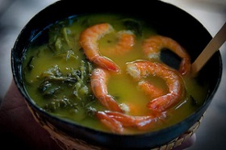

Culianaria Tipica do Amapá
Parte da grande cultura amazônica, o Amapá não deixa a desejar quando se trata de sua gastronomia. Aproveitando ao máximo a biodiversidade que toda a Região Norte do Brasil oferece, a cozinha do estado usufrui dos peixes e, obviamente, das diversas frutas da região. Existe também uma herança adquirida dos migrantes de outras regiões do Brasil.
Tacacá
Preparado com tucupi (que é o sumo retirado da raiz da mandioca brava), goma de mandioca e camarão. Seu tempero leva pimenta de cheiro, alho, sal e jambu, um tipo de erva típica da região.
Ingredientes
4 xícaras (chá) de água
1/2 xícara (chá) de polvilho azedo (ou goma de mandioca)
1 colher (chá) de sal
500 g de camarão salgado (seco)
4 folhas de chicória
4 dentes de alho bem amassados
3 pimentas-de-cheiro
2 maços de jambu
2 litros de tucupi
Modo de Preparo
Coloque o tucupi em uma panela com o alho bem amassado, o sal, a chicória e as pimentas.
Leve ao fogo.
Quando começar a ferver, abaixe o fogo, tampe a panela e deixe cozinhar por 30 minutos aproximadamente.
Simultaneamente em outra panela, cozinhe o jambu até ficar tenro.
Retire do fogo, escorra e reserve.
Lave bem os camarões e leve-os ao fogo em uma panela com 4 xícaras de água.
Deixe ferver por aproximadamente 5 minutos.
Retire a cabeça e a casca.
Em uma panela, misture o polvilho com a água dos camarões, leve ao fogo e mexa até obter um mingau.
Sirva em uma cuia com uma concha de tucupi, um pouco do mingau, algumas folhas de jambu e os camarões.